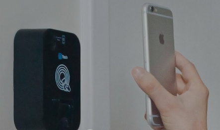

Com o Qrcode na tela, posicione o celular a aproximadamente 20cm (1 palmo) do leitor por aproximadamente 5 segundos.
Veja o exemplo da imagem abaixo:

iACESSO
iACESSO é uma plataforma de controle de acesso para condomínios residenciais e comerciais.
Todo o sistema, envolvendo equipamentos e acesso à plataforma, pode ser contratado pela AC Control www.accontrol.com.br.
_iACESSO
Carregando...
QRcode gerado.
Posicione a imagem de frente para o leitor por 5 segundos